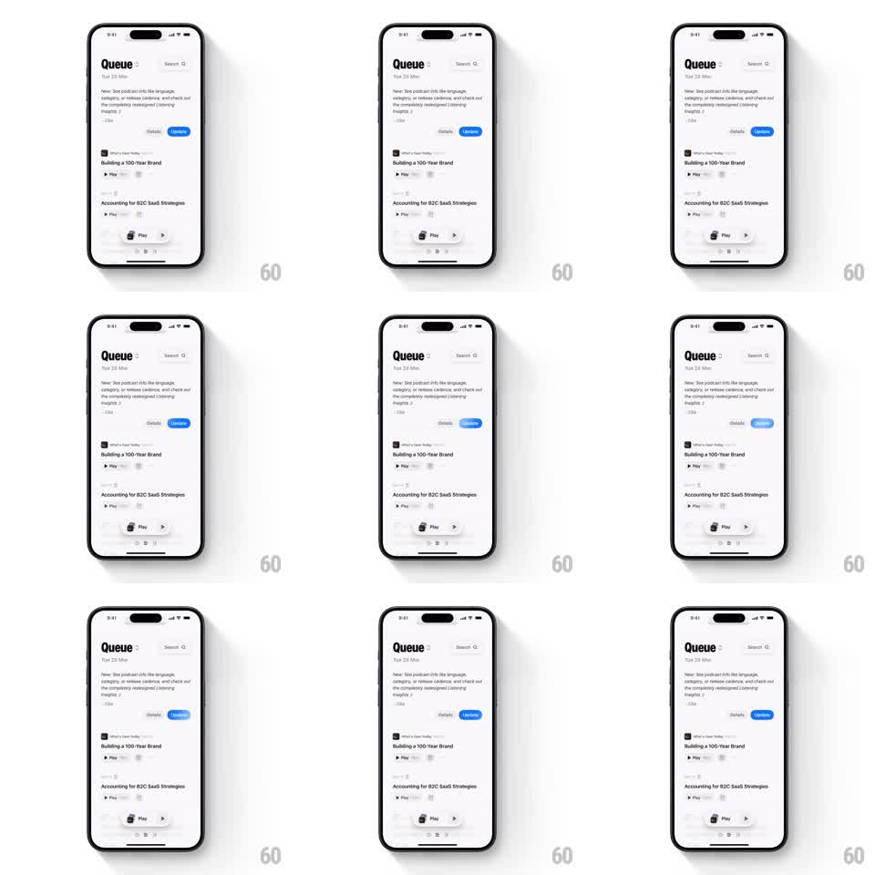

Media
Frame-by-frame

Rebuild this animation 1:1: Queue's Update button shimmer - a looping diagonal light sweep across the blue Update pill that draws the eye without disturbing the podcast queue screen.

Rebuild this animation 1:1: Queue's Update button shimmer - a looping diagonal light sweep across the blue Update pill that draws the eye without disturbing the podcast queue screen.
## Integration
Integration: stack-agnostic spec - springs given as stiffness/damping, timed motions as duration + curve; map every value to your framework and animation library of choice.
## Scene
A podcast queue screen: "Queue" header with a Search field, an intro card, an episode list ("Building a 100-Year Brand", "Accounting for B2C SaaS Strategies" with Play rows), and a mini player docked at the bottom. In the intro card's action row sit a gray "Details" button and a blue "Update" pill.
## Motion spec
Pattern: looping diagonal shimmer sweep on a call-to-action pill.
- Every 2.6s a light band (roughly 30% of the button's width, white at 35% opacity, skewed ~20deg) sweeps across the Update pill from left to right (500ms, ease-in-out), clipped to the pill's rounded shape.
- Between sweeps the button is perfectly still; the rest of the screen never animates.
- On tap the shimmer stops and the pill presses (scale 1 -> 0.95 -> 1, spring ~340/14); shimmer resumes 1s later.
- Optional second beat: every fourth sweep is followed by a subtle glow bloom on the pill (shadow opacity 0.2 -> 0.4, 300ms, then back).
## Calibration
- The shimmer is clipped inside the pill - it must never spill onto Details or the card.
- Sweep speed reads as a glint, not a progress bar: 500ms across, constant velocity middle.
## Reduced motion
No shimmer; the button is static blue.
## Don't miss
- Only the Update pill shimmers - Details and everything else stay matte.
- Keep the loop period relaxed (2.6s); faster reads as anxiety, slower as dead.